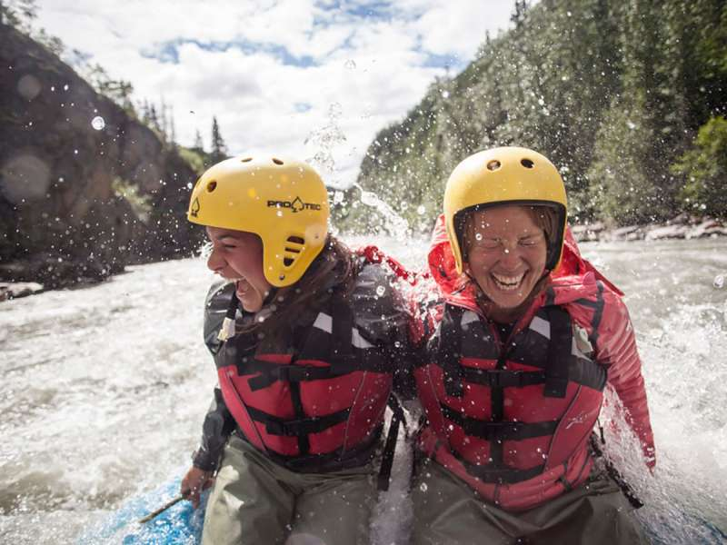
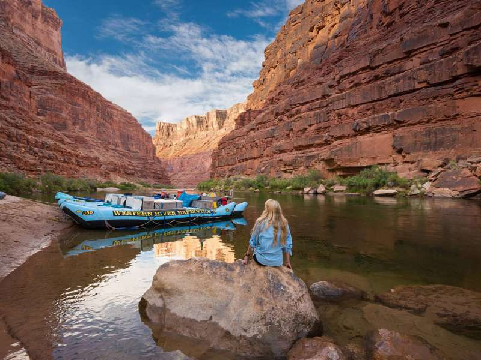
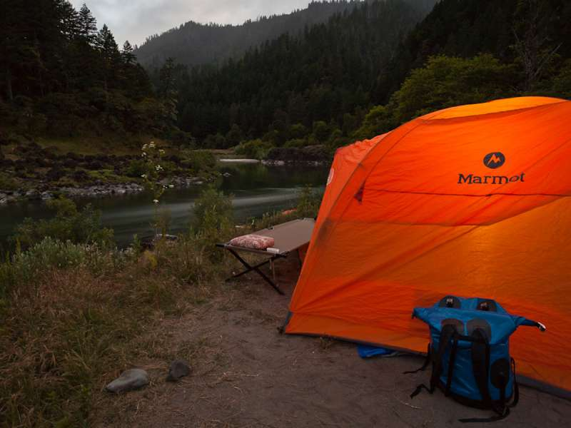

Schedule Your Trip
You already know that rafting trips are lots of fun, but as you plan, you want to know how to budget and plan the cost of a white water rafting trip. The outline below will give you an idea of how to prepare your white water wallet (or purse, or European carry-all). Compare prices for white water rafting whether you are looking at a simple half - full day rafting trip, or looking at an all-inclusive whitewater rafting expedition for multiple days. Rafting trips with a professional outfitter include transportation (usually by school bus) to and from the river - meaning they will drop you off at the top end (the put-in) and pick you up at the bottom end (the take-out). Multi-day expeditions will provide the same, but may also include transport by bus, plane, helicopter, jetboat, etc.
Click here to scheduleMulti-Day Rafting Trips:
| Trip Duration | Cost |
|---|---|
| 2 days (overnight) | $600 + $65/each |
| 3 Day | $1000 + $65/each |
| 4 Day | $1200 + $65/each |
| 5 - 7 Days | $1600/$3000 + $65/each |
| 8 - 21 Days | $6000/$8000 + $65/each |
The Value of a White Water Rafting Trip
When you compare the costs of white water rafting with other activities, like a visit to a theme park, a good day of getting into the great outdoors with others who share the same spirit of untamed adventure is priceless. Does bonding with fellow roller coaster riders ever really happen?! Not like on a day of rafting.
River Rapture: Bonding, Transformation, and Living in the Present
On a multi-day rafting trip, the bond with those sharing the experience strengthens exponentially. Something else happens after about day 3 on a multi-day rafting expedition which is very difficult to put into words, but "magical" might be appropriate. It has something to do with the unwinding of your cares back there in the world outside of the river and canyon. Something about the linear way that a river trip unfolds helps you focus on the moment at hand.
Embracing Slumber in Tents and Beneath the Stars
After about the second night, sleeping in a tent or under the stars is you settle into it and you begin to wonder how we ever go to sleep inside four walls! This happens to first-time campers time and time again. One last value to mention is the ability to truly get away from cell phone reach. Think about that for a second. The opportunity to not even be tempted by a tether to the world back home is increasingly rare. Get thee to the wilderness!